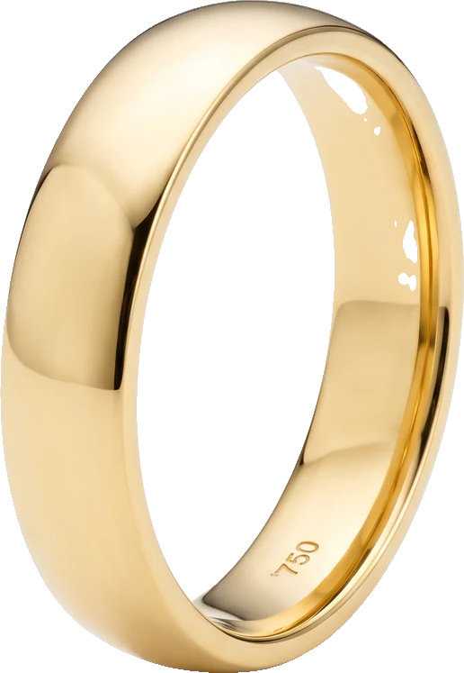
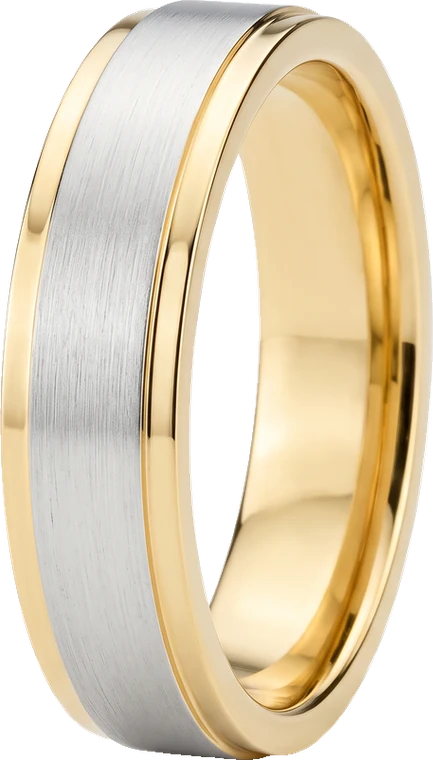
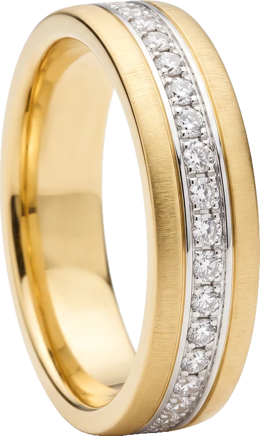
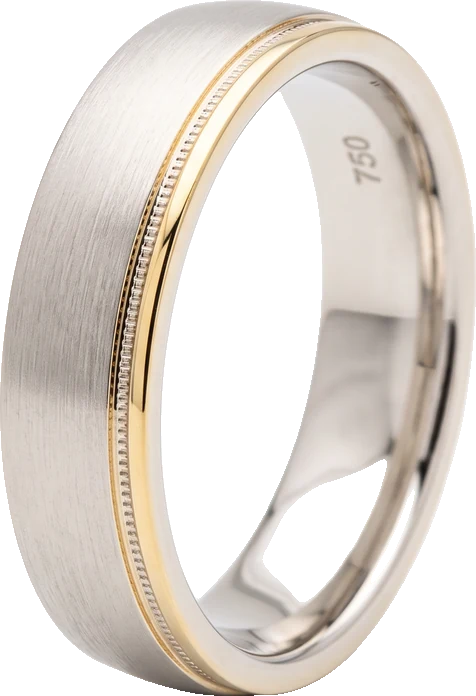
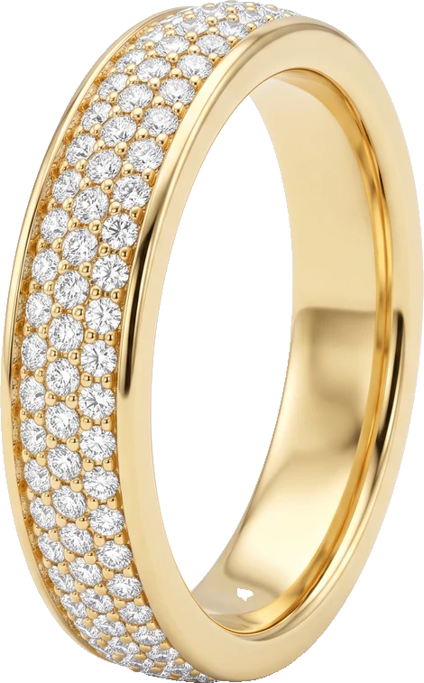
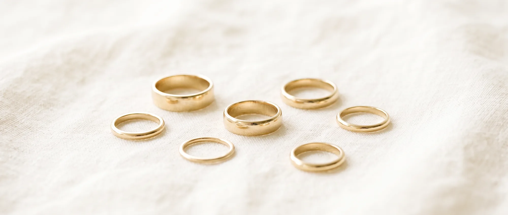

Startseite · Trauringe
Ein Trauring wird jeden Tag getragen – jahrzehntelang. Deshalb entscheidet am Ende nicht der Katalog, sondern wie er sich am Finger anfühlt. Hier sehen Sie, was bei uns in der Vitrine liegt.
Bicolor oder einfarbig, poliert oder mattiert, mit Brillanten oder ganz ruhig. Jedes Modell fertigen wir in Gelb-, Weiß- oder Rotgold und in Ihrer Breite.
Die Abbildungen zeigen die Modelle, nicht den tagesaktuellen Bestand. Was gerade im Haus ist, sehen Sie am besten bei uns in der Wellritzstraße.

Legierung, Profil, Breite, Oberfläche, Steinbesatz und Gravur – Sie stellen Ihr Paar am Bildschirm zusammen und sehen jede Entscheidung sofort am dreidimensionalen Ring. Am Ende schicken Sie uns Ihre Zusammenstellung oder bringen sie einfach mit.